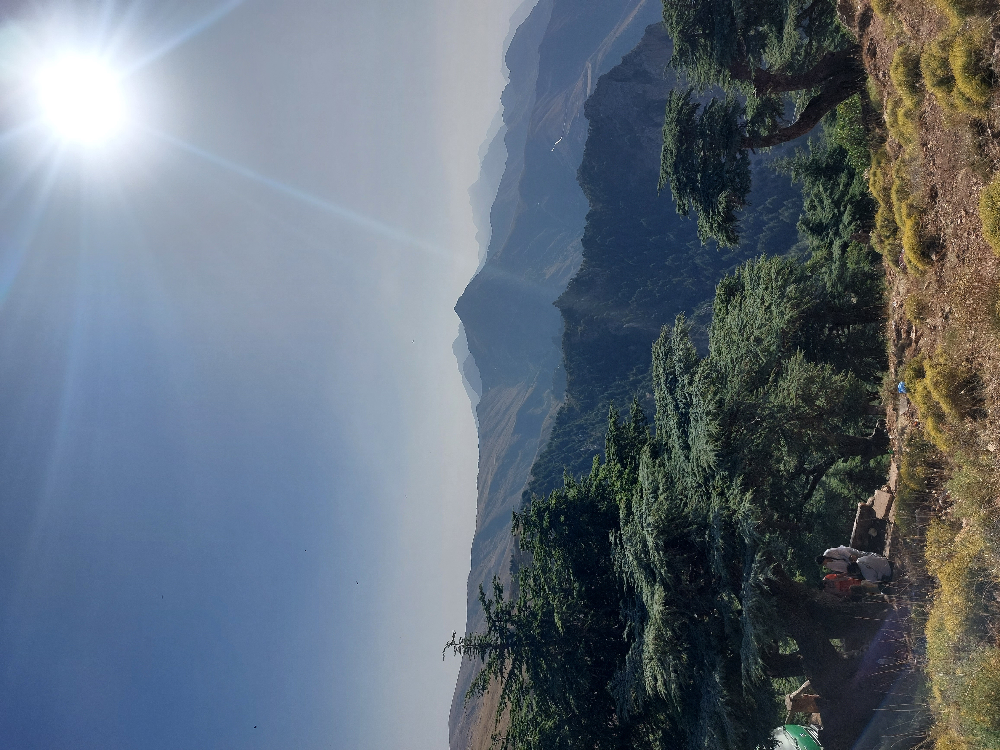

La terre sous nos pas
Il reste un arbre
au bout de la rue,
un vieux témoin
qui penche avec le vent.
Je passe devant lui
chaque matin
comme on passe
devant quelqu’un
dont on ne connaît
pas le prénom
mais dont l’absence,
un jour,
fera soudain
beaucoup de bruit.
La forêt recule
en silence.
On entend moins
les oiseaux,
davantage
les moteurs.
La terre a chaud,
les saisons déplacent
leurs meubles
et nous cherchons encore
où poser notre fatigue.
Je rentre chez moi.
Une tasse refroidit
sur la table,
le téléphone éclaire
un visage épuisé.
Dans la chambre,
la nuit respire mal.
J’ai connu l’angoisse
comme une pièce
sans fenêtre,
le deuil comme un objet
qu’on ne sait pas où ranger,
et pourtant,
parfois,
un rayon de soleil
sur le mur
suffit à remettre
le monde debout.
Nous sommes faits
de choses fragiles :
de peau,
de mémoire,
de blessures
qui ne se voient pas,
d’un cœur qui continue
même lorsqu’il ne sait
plus pourquoi.
Dehors,
la ville
ne dort jamais.
Un bus avale
des visages,
une sirène
traverse l’avenue,
un homme marche
avec une valise
qui contient peut-être
toute sa maison.
Il vient de loin,
d’un pays
dont la frontière
a fermé ses portes
mais pas ses souvenirs.
Les frontières
sont étranges :
des lignes tracées
sur des cartes
qui deviennent
des murs
dans la chair
des hommes.
Alors je regarde
ceux qui passent.
Celui qui cherche
un travail,
celle qui cherche
un toit,
l’enfant qui tient
la main
de sa mère
comme si le monde
entier
pouvait disparaître
derrière lui.
Je voudrais
écrire
pour eux,
sans parler
à leur place.
Écrire
seulement
que la violence
laisse des traces
sur les murs,
dans les corps,
dans les silences
après les nouvelles.
Écrire
que la ville
moderne
nous promet
des lumières
et nous vole
parfois le ciel.
Écrire
que nous avons besoin
de revenir au sol,
à la boue
sous les chaussures,
à l’odeur
d’une pluie véritable,
à l’arbre
qui grandit lentement
sans demander
la permission
au monde.
Peut-être
sommes-nous cela :
des êtres de passage
qui ont oublié
qu’ils passent.
La terre,
elle,
restera sous nos pas
jusqu’au jour
où nos pas
ne seront plus là.
Alors je voudrais
apprendre
à marcher
autrement :
plus lentement,
avec attention,
comme si
chaque feuille,
chaque visage,
chaque frontière
traversée,
chaque douleur
cachée
était une phrase
du même poème.
Et peut-être
qu’aimer le monde
commence
simplement ainsi :
regarder.
Ne pas détourner les yeux.
Puis poser la main
sur la terre encore vivante
et comprendre enfin
que nous ne sommes pas
au-dessus d’elle,
mais dedans.
Djamel Metref
At Yenni le 29 Août 2026
← Tous les poèmes
La terre sous nos pas
Nature et écologie · Exil et solidarité · Liens humains